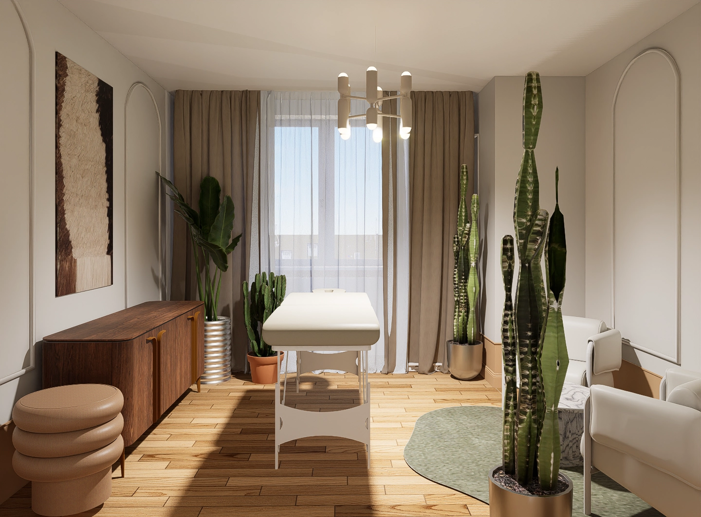
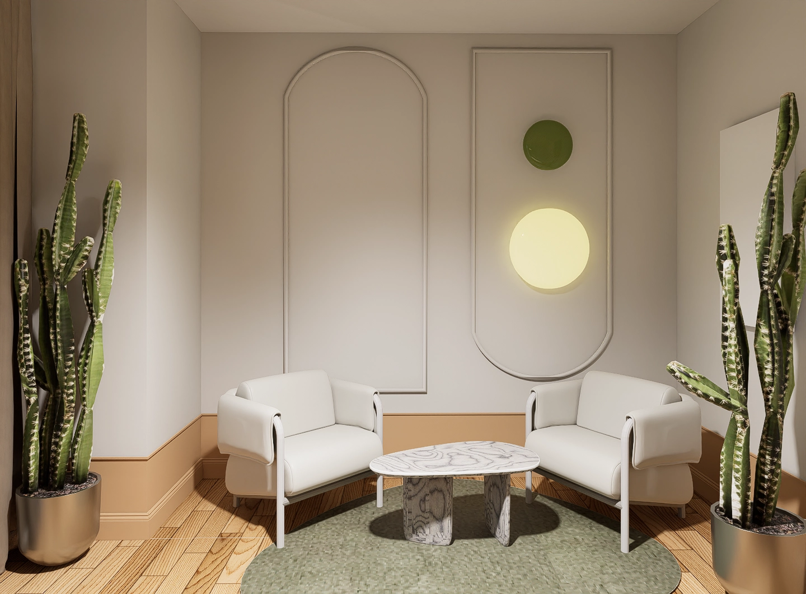
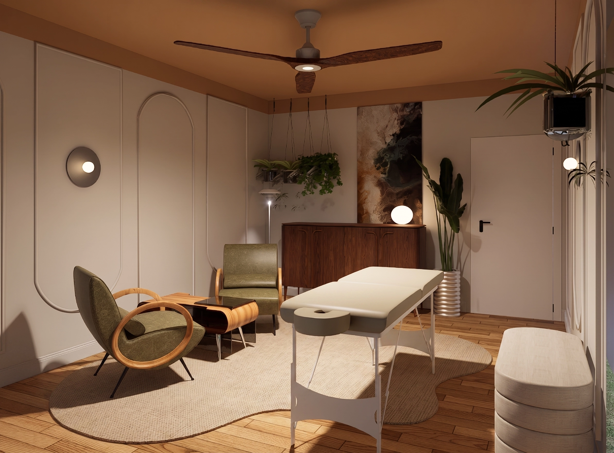
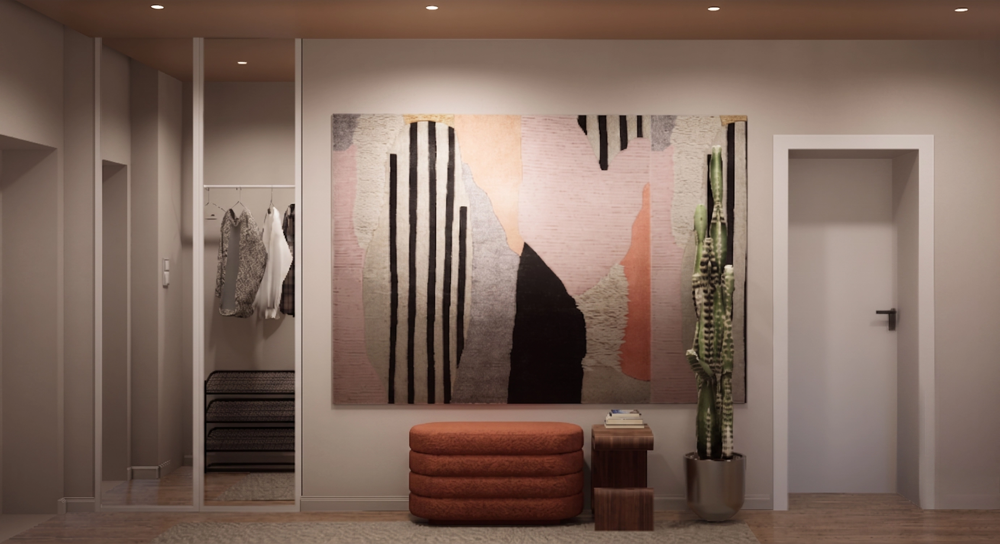
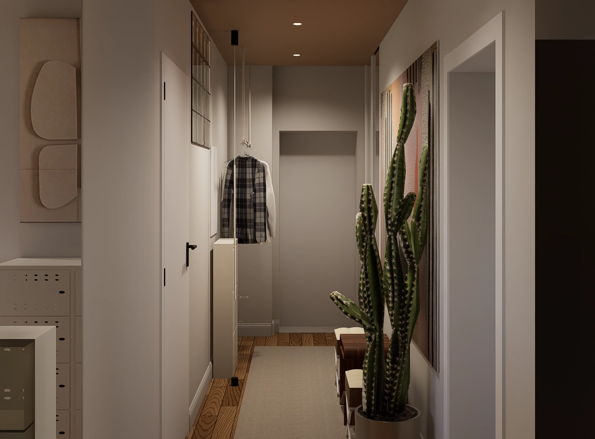
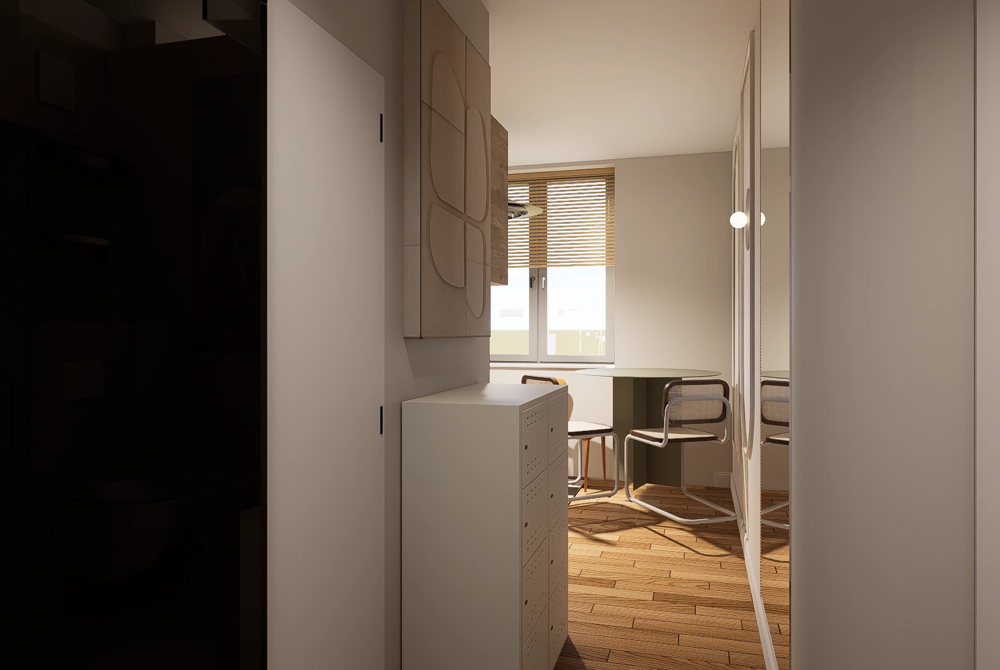

Dobrostan
Przestrzeń pracy / GabinetGabinet pracy w Warszawie zaprojektowany zgodnie z zasadami neuroarchitektury – tak, by wspierać koncentrację i regenerację w trakcie dnia pracy. Naturalne materiały, akustyka ograniczająca hałas i światło dopasowane do rytmu dobowego tworzą przestrzeń, która realnie wpływa na samopoczucie i efektywność.







Marzy Ci się podobna metamorfoza?
Skontaktuj się